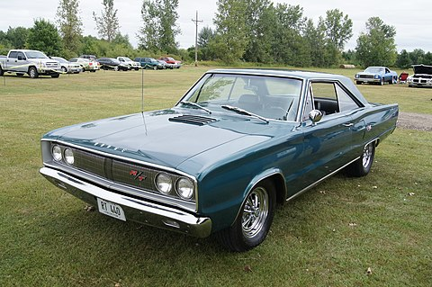
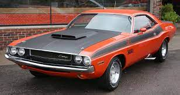

The Dodge Challenger is the name of three different generations of automobiles (two of those being pony cars)
produced.
by American automobile manufacturer Dodge. However, the first use of the Challenger name by Dodge was in 1959
for
marketing a "value version" of the full-sized Coronet Silver Challenger.

From model years 1970 to 1974, the first generation Dodge Challenger pony car was built using the Chrysler E
platform in
hardtop and convertible body styles sharing major components with the Plymouth Barracuda.
